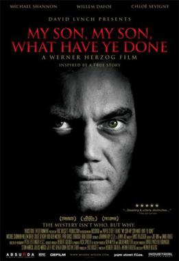

My Son, My Son, What Have Ye Done

Werner Herzog
2009
91 minutes
Wikipedia link
IMDB link
This is text.
Time to choose something different:
- Maybe Greek tragedies are a bit much for young people to watch in their formative years. At most they should be watching spicy episodes of "I Love Lucy"... - Turn to section 19
- Forget the pizza. He should have asked for a plane. - Turn to section 67
- That kid got a bit too much into Greek tragedy. But at least he wasn't some goddamn weeaboo! - Turn to section 226